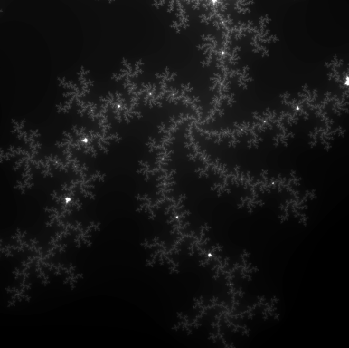

template © 2019 Reflux Design
background by
NASA/ESA/USRA/STScI
all other content © Sophia Flury 2023-2024
Teaching
I have extensive experience mentoring postgraduate (Master's) students as they develop and mature as scientific thinkers and researchers. Together with Ed Moran, I have co-advised several Master's students with their thesis projects, playing a pivotal role in the progress and development of their theses. My mentoring philosophy relies on guided discovery, helping students to learn and develop technical and critical thinking skills as well as independence as they obtain and analyze results. I have assisted my students in going to the AAS conferences, preparing publications, and moving on to the next stages in astronomy careers at the PhD level.I have experience with a variety of introductory astronomy classes both for majors and for non-majors. My most extensive TA work involved developing and teaching observational astronomy labs involving the use of python and numerical methods. These labs focused on developing specific technical skills in python for solving problems in data analysis and modeling, particularly in the use of linear algebra, convergence tests, boundary and initial value problems, modular design, array management, and image processing.

Fractal Visualization
To illustrate the exercises I developed for my students, here is a zoom-in on the fractal produced from the Mandelbrot set. I had students write functions to test the Mandelbrot set for divergence over a grid of input values and map the test results into an image like the one shown here. The skills they developed here were then directly applied to manual data reduction of raw images they recorded on a CCD mounted on a 17 inch reflector.